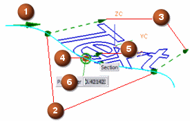

|
选项 1 |
描述 起始方向 – 这个圆锥体代表文本的起始方向，起始方向是根据您选择曲线的位置，双击圆锥体以反转文本方向。 |
|
2 |
长度 – 沿着曲线拖动这些手柄将沿曲线自身拉伸文本 |
|
3 |
高度 – 拖动这些手柄以控制文本高度 |
|
4 |
锚点位置 – 这是手柄中心，使用它沿曲线滑动文本 |
|
5 |
基线偏置 – 拖动这个手柄控制文本相对曲线的偏置，双击这个手柄 来使文本绕选定曲线翻转方向。 |
|
6 |
参数 — 参数值表示中心文本手柄位置从曲线起始端的百分比。 |